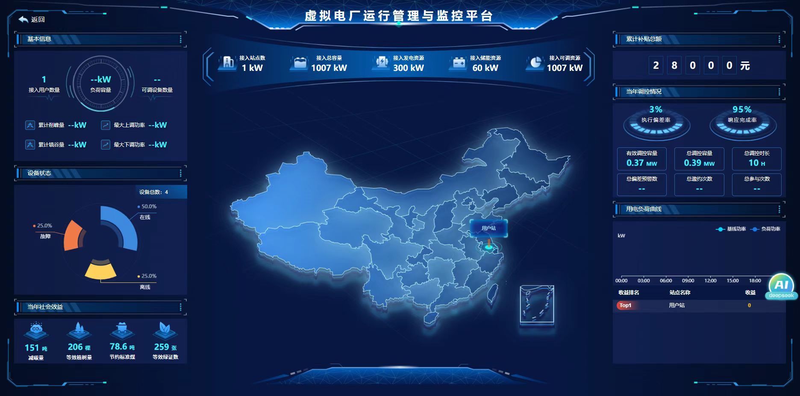
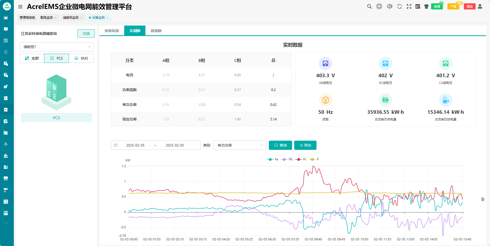
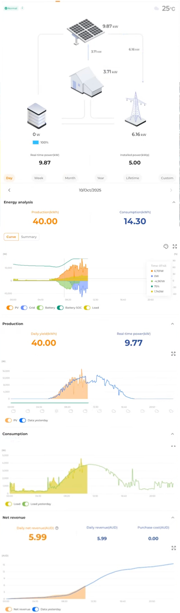
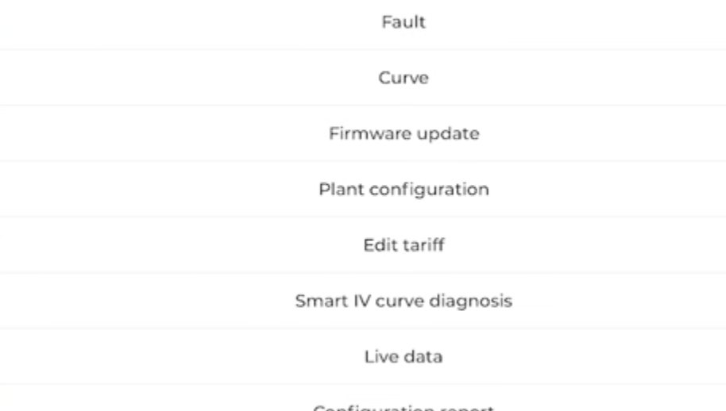

2025年EMS核心趋势是"云边协同+AI调度"——系统根据SOC状态和实时电价自动调整充放计划，年循环次数可从1200次提升至1500次，电池寿命延长约20%。
换电站规模化之后，同一块电池今天在A站、明天在B站，如何追踪每块电池的健康状态、预判哪块快报废，成为运营核心课题。EMS需要提供"电池全生命周期档案"。
2026年起，工商业用户需要向监管机构提交碳核算数据。EMS系统如果能自动输出"今年减排多少吨、等效种了多少棵树"，将直接成为客户续费的理由。
以运维工程师李工的真实需求为基准，从业务逻辑、功能设计、信息层级、视觉表现四个维度拆解每个竞品。绿色框 = 值得学，红色框 = 要避免。




以运维工程师李工的真实需求为基准，只保留对他的日常工作有实际帮助的优化点。收益数据、AI预测等功能另行规划，不混入本轮运维体验优化。